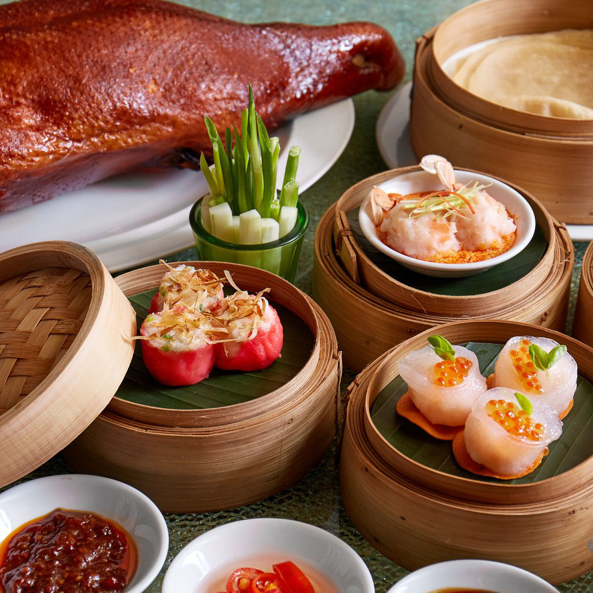
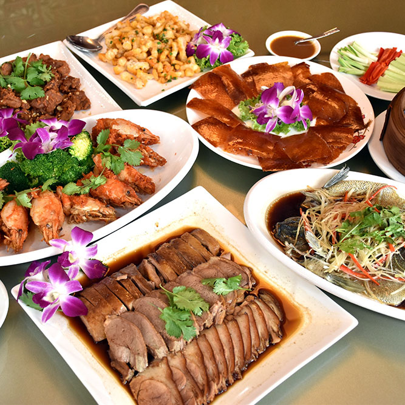
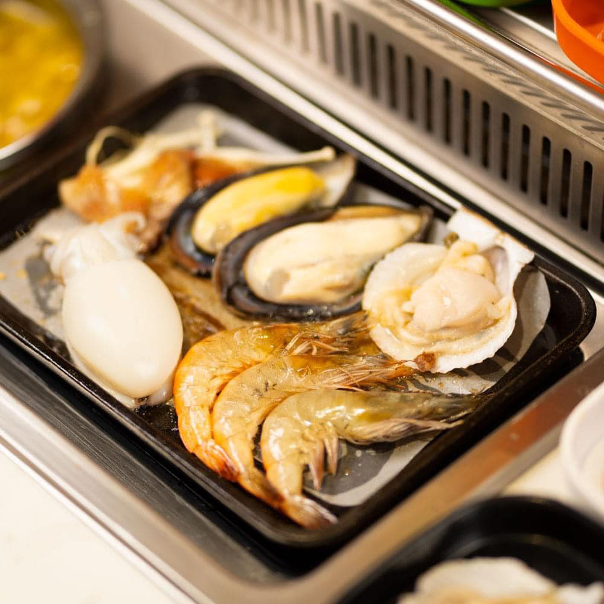
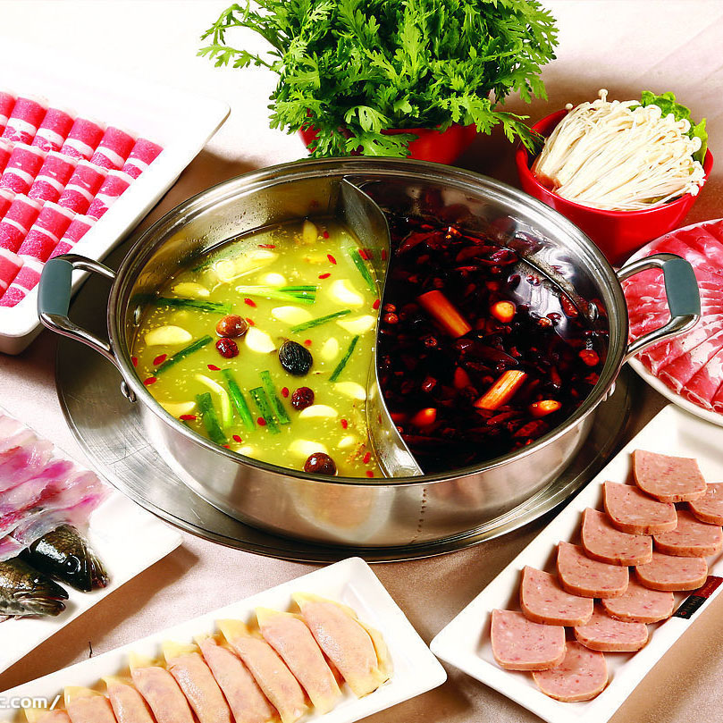
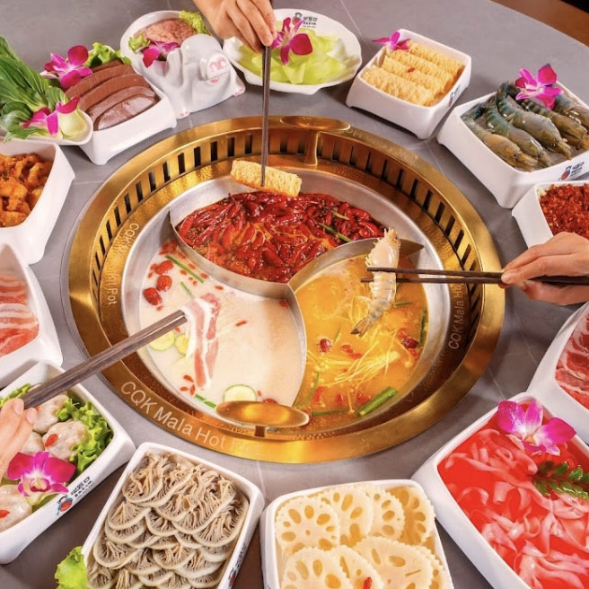
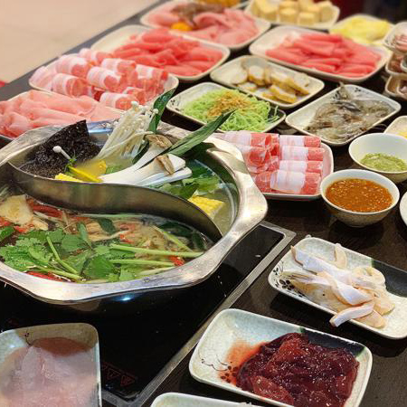
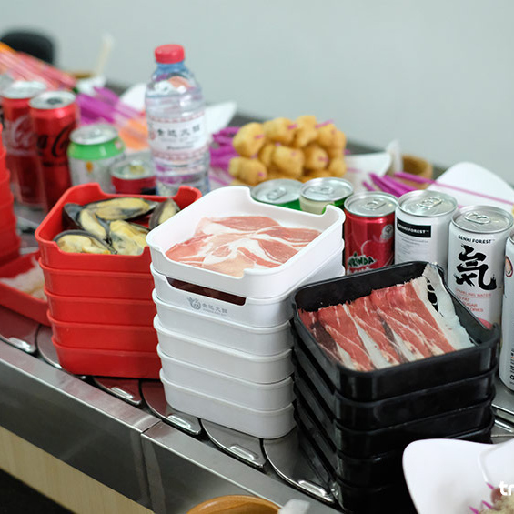

หน้าหลัก
ร้านอาหารไทย
ร้านอาหารจีน
เครื่องดื่ม/คาเฟ่
บาร์/ผับ
 1. ห้องอาหารจีนหล่งฟ่ง
บุฟเฟต์อาหารจีนคุณภาพ สไตล์กวางตุ้ง ราคาสุดคุ้ม เป็นร้านอาหารจีนในโรงแรมสวิสโฮเต็ล กรุงเทพฯ รัชดา
เปิดบริการทุกวัน : มื้อกลางวัน 11.00น.-14.30น. มื้อค่ำ 17.30 น.-22.00น.
โทร 0-2694-2222
 2. ภัตตาคารเฉาซียง
ภัตตาคารอาหารจีนสูตรต้นตำรับสไตล์จีนแต้จิ๋วแท้ๆ เปิดมานานนับ 10 ปี ติ่มซำราคาไม่แรง มีเมนูให้เลือกเยอะมาก บุฟเฟ่ต์ติ่มซำ ราคา 620 บาท
เปิดบริการทุกวัน : 11.00น.-12.30น. และ 13.00น.-14.30น.
โทร 081-810-9788 , 088-167-2888
 3. Hao Chi หม้อไฟปิ้งย่าง หม่าล่า ต้นตำรับ
บุฟเฟต์ หม้อไฟปิ้งย่าง หม่าล่า ต้นตำรับ มีทั้ง A La Carte ราคา 169 บาท และ Buffet ราคา399 บาท
เปิดบริการทุกวัน : 12.00น. – 24.00น.
โทร 080-972-1579
 4. เซียงหม่าน หม้อไฟฉงซิ่ง
หม่าล่าหม้อไฟแบบจีนแท้ๆ สามารถแบ่งเลเวลของน้ำซุปได้
เปิดบริการทุกวัน : 12.00น. -1.00น.
โทร 095-708-6116
 5. CQK หม่าล่า
หม่าล่า Hotpot สไตล์จีนฉงชิ่ง รสชาติร้อนแรง มีน้ำซุปให้เลือกหลากหลาย
เปิดบริการทุกวัน : 11.00น.-03.00น.
โทร 099-380-7777
6. สุกี้ดารา
สุกี้สุดฮอตย่ายห้วยขวาง คนต่อคิวเยอะมาก มีน้ำซุปให้เลือกหลากหลาย วัตถุดิบดี น้ำจิ้มอร่อย
เปิดบริการทุกวัน : 12.00น.-03.00น.
โทร 081-686-2533
7. สุกี้จินดา
สุกี้สายพานสไตล์จีนเจ้าแรกในประเทศไทยที่มีน้ำซุปหลากหลายให้เลือกถึง 7 ชนิด ให้อร่อยกันแบบหม้อส่วนตัว และมีบรรยากาศแบบสตรีทฟู๊ดเมืองจีน
เปิดบริการทุกวัน : 11.00น.-04.00น.
โทร 098-335-2460